Hizmetler · 01
Mimari
çelik.
Çelik merdivenler, metal korkuluklar, separatörler ve özel tasarım metal işler üretiyoruz. Her parçayı mekâna göre çiziyor, atölyemizde üretiyor ve kendi ekibimizle monte ediyoruz.
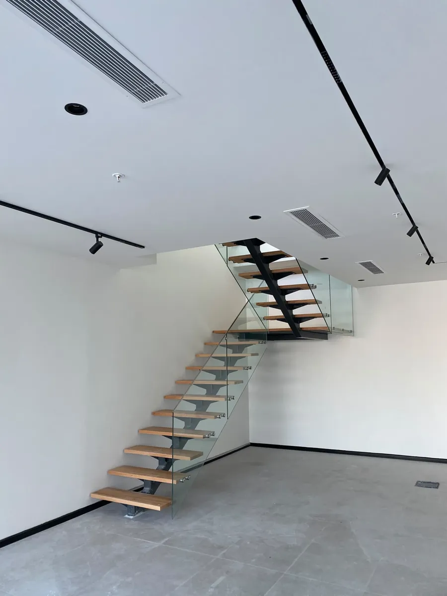
Çelik merdivenler
On model,
tek ölçü: sizin.
Her merdiven mekâna göre çizilir. Model yalnızca bir başlangıç noktasıdır; basamağı, korkuluğu ve rengi siz seçersiniz.
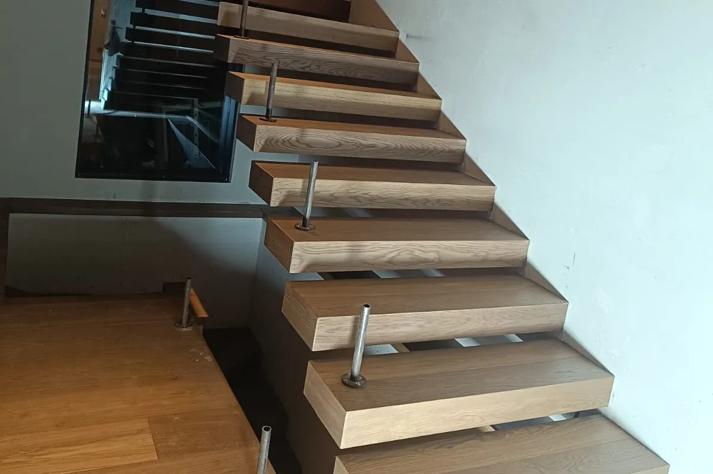
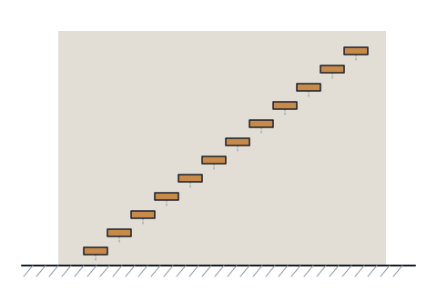
Yan görünüş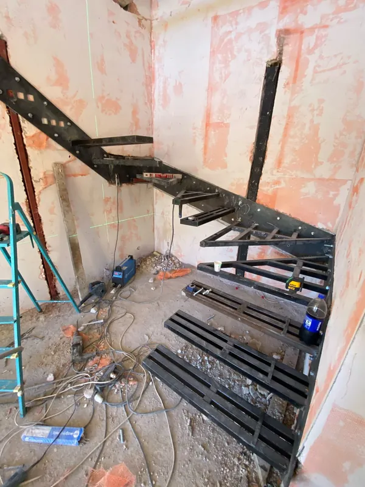
 Montajdan
Montajdan
Konsol merdiven (uçan)
Basamaklar gizli çelik ankrajlarla doğrudan betonarme veya taşıyıcı duvara bağlanır, alttan hiçbir taşıyıcı görünmez. Merdiven havada asılı gibi durur; dar ve sade mekânlarda en çok tercih edilen modeldir.
- Taşıyıcı
- Duvar ankrajı
- Gereken
- Taşıyıcı duvar
- Etki
- En hafif görünüm
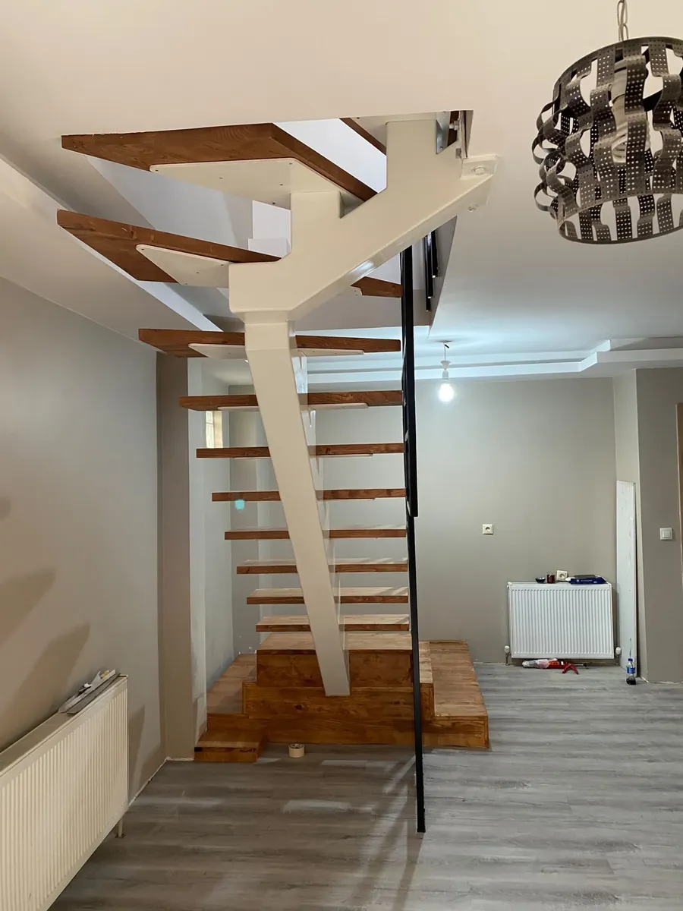
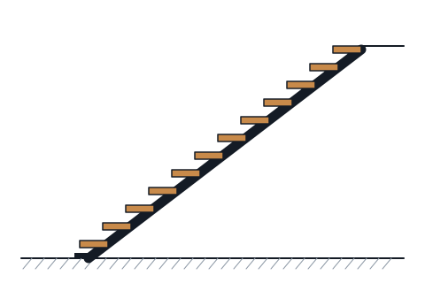
Yan görünüşDüz omurgalı merdiven
Masif ahşap basamaklar omurganın üzerindeki çelik plakalara oturur; alttan bakınca tek ve sade bir çizgi formu oluşturur.
- Taşıyıcı
- Düz merkez omurga
- Basamak
- 4–5 cm masif ahşap
- Etki
- Hafif, grafik
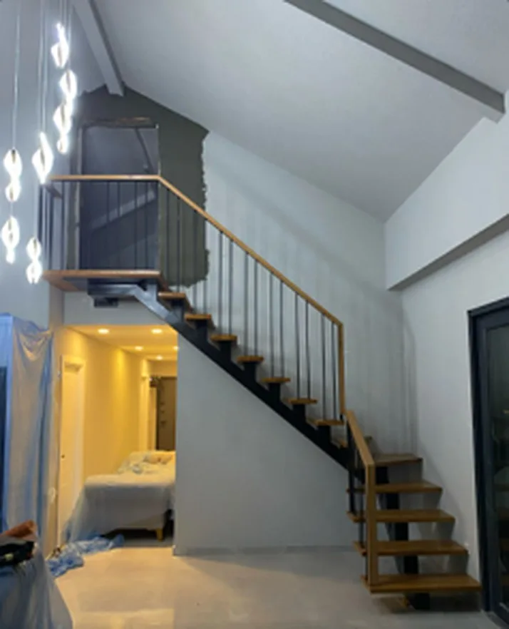
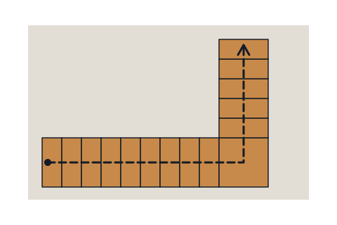
PlanL merdiven
Bir sahanlıkla 90° döner. Her kolun kendi düz omurgası vardır, sahanlık tek bir çelik dikmeye oturur.
- Taşıyıcı
- İki omurga + sahanlık
- Gereken
- Köşe
- Etki
- Kompakt

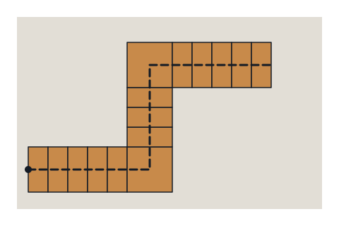
PlanZ merdiven
İki sahanlıkla iki kez 90° döner, planda bir Z çizer. Kollar duvarlara yaslanır, merdiven odanın bir ucundan ötekine yürür.
- Taşıyıcı
- Üç omurga, dikmesiz sahanlık
- Gereken
- Geniş, köşeli alan
- Etki
- Dinamik
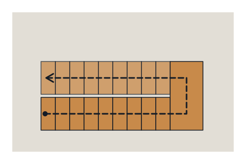
PlanU merdiven
Sahanlıkta 180° döner; ikinci kol birincinin yanından geri gelir. Dar ama derin merdiven boşluklarında yüksekliği en az alanda kazanır.
- Taşıyıcı
- İki omurga + sahanlık
- Gereken
- Derin alan
- Etki
- Kompakt, katmanlı
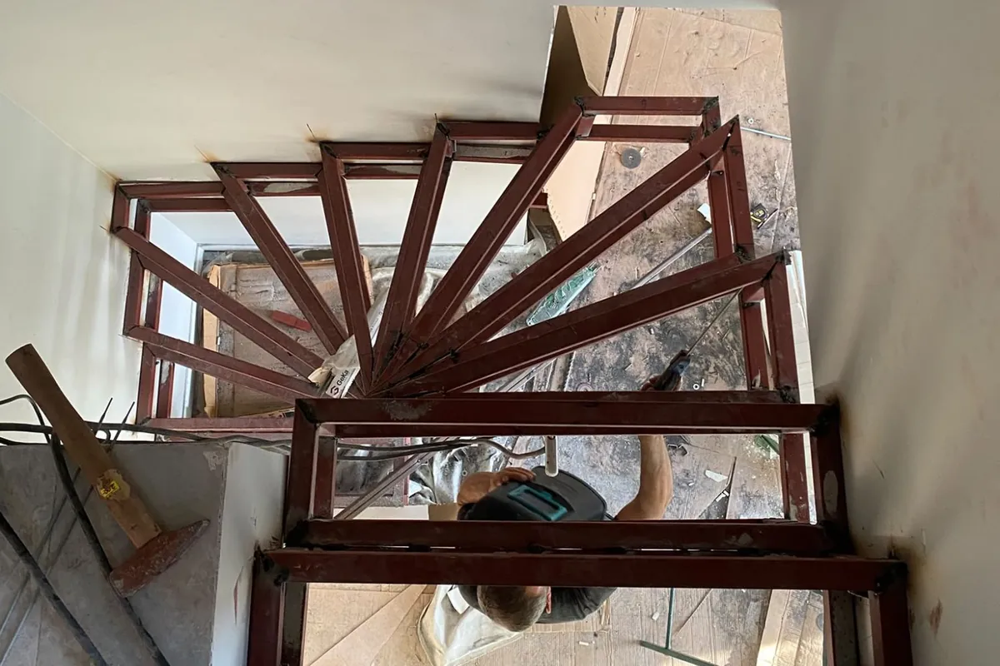
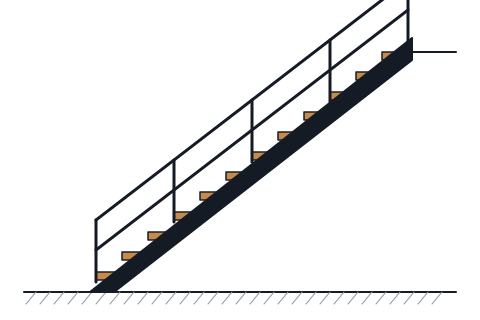
Yan görünüşÇelik profilli merdiven
Çelik profiller yerinde kesilip birleştirilerek merdiven formu oluşturulur. Dar alanlarda tercih edilir; dubleks ve ters dubleks dairelerde kullanılır.
- Taşıyıcı
- Kaynaklı profil gövde
- Kullanım
- Dubleks, dar alan
- Etki
- Endüstriyel
- Taşıyıcı
- Gizli çelik profil
- Kaplama
- Ahşap basamak ve alın
- Etki
- Klasik, yekpare
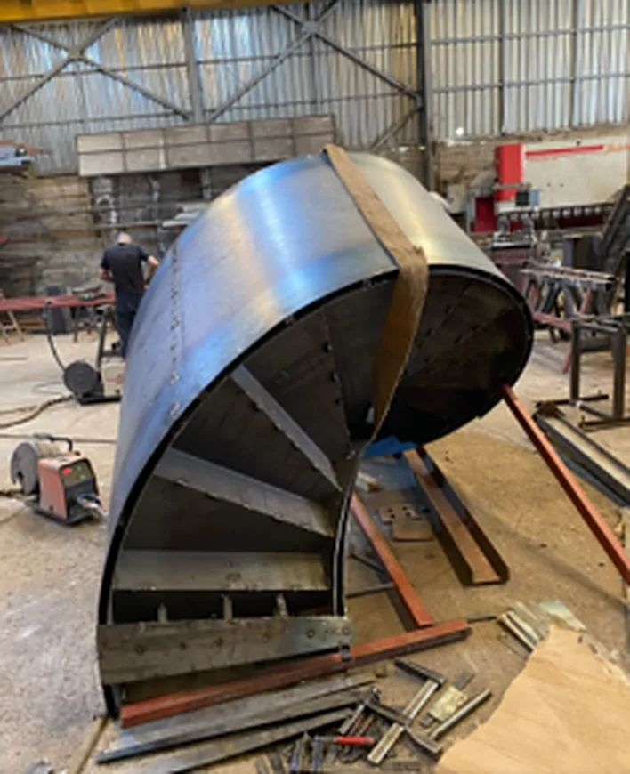
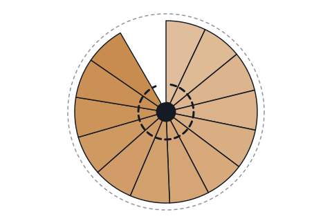
PlanSpiral merdiven
Basamaklar helezon biçiminde bükülen çelik taşıyıcı boyunca yelpaze gibi açılır. En az alanı kaplar; asma kat, çatı katı ve bahçe çıkışları için idealdir.
- Taşıyıcı
- Helezon çelik omurga
- Gereken
- Küçük bir daire
- Etki
- Heykelsi
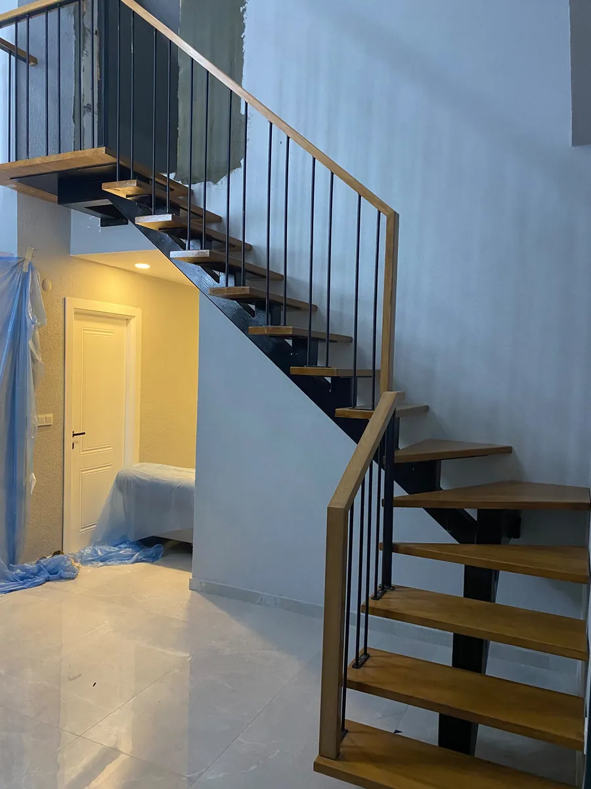
Limon kirişli merdiven
Basamaklar, iki yanda uzanan eğimli çelik kirişlerin, yani limonların arasına yerleştirilir. Yük iki kirişe paylaştırıldığı için geniş ve uzun kollarda sağlam bir çözüm sunar. Kirişler duvara yaslanabilir ya da boşlukta serbest durabilir.
- Taşıyıcı
- İki yan limon kirişi
- Basamak
- Ahşap, çelik veya sac
- Etki
- Sağlam, klasik
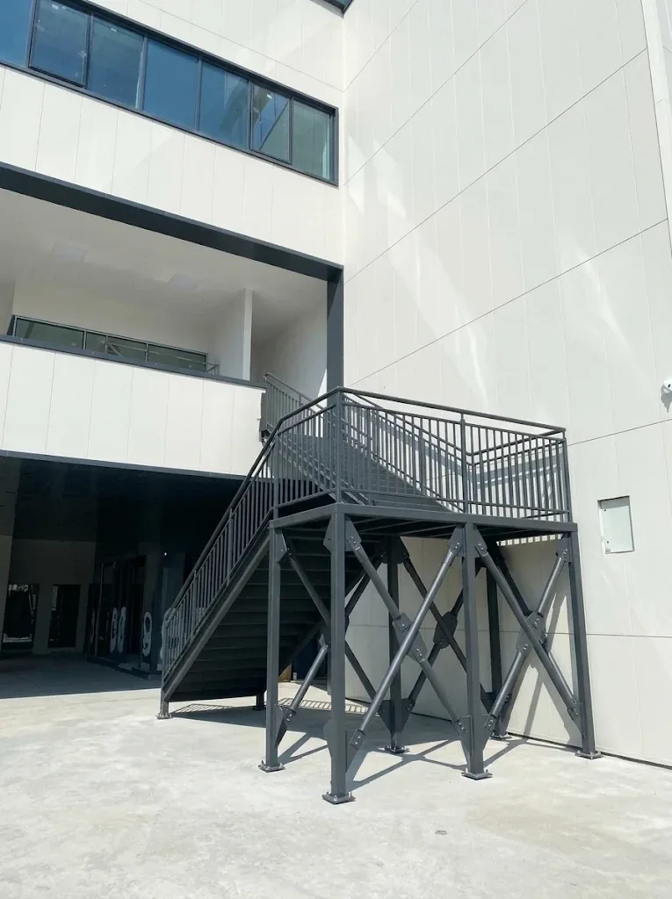
Yangın merdiveni
Bina cephesine bağlanan, eğimli çelik kirişler ve sahanlık kulelerinden oluşan dış merdivendir. Basamaklar kaymayı önleyen baklava desenli sacdan ya da ızgaradan yapılır. Acil durumda her kattan güvenli bir kaçış yolu sağlar.
- Taşıyıcı
- Çelik kiriş ve kule
- Basamak
- Baklava sac veya ızgara
- Kullanım
- Dış cephe, kaçış yolu
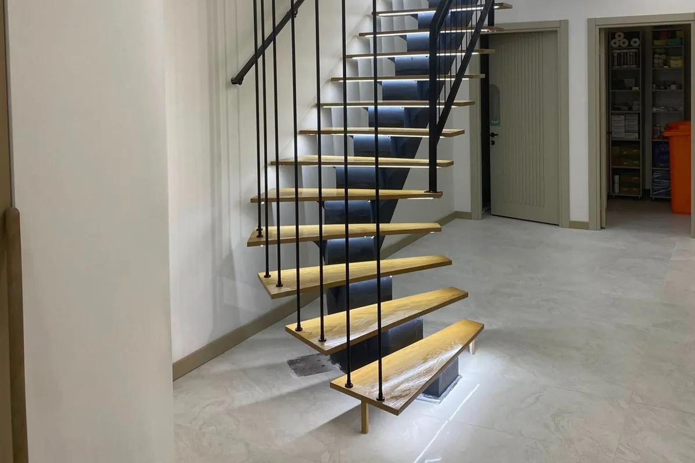
Yarı döner omurgalı merdiven
Tek çelik omurga, kolun başında yarım dönüş yaparak basamakları yelpaze gibi açar. Dönüşü sahanlıksız çözdüğü için dar alanlarda bile kesintisiz ve akıcı bir çizgi oluşturur.
- Taşıyıcı
- Dönen tek omurga
- Basamak
- Yelpaze dönüş
- Etki
- Akıcı, heykelsi
Kartela
Renk ve malzeme
Omurga ve korkuluk çeliği standart RAL renklerinde boyanır; projeye özel bir renk de seçebilirsiniz. Basamaklarda dişbudak, kayın ve ladin gibi masif ahşapları farklı tonlarda uyguluyoruz. Ekrandaki renkler gerçek boyadan biraz farklı görünebilir.
Omurga renkleri
- RAL 7016Antrasit gri
- RAL 9005Siyah
- RAL 7032Çakıl gri
- RAL 9010Kırık beyaz
- RAL 7048Sedef gri
- RAL 1013İnci beyazı
Ahşap / mermer basamak
- Meşe kaplama MDF
- Ceviz kaplama MDF
- Ekli masif panel
- Porselen
- Traverten
- Mermer
- Calacatta BrownMermer
- Alexandır BlackGranit
Masif ahşap · kullandığımız türler
- KayınNaturel
- KayınAçık ceviz
- DişbudakAçık ceviz
- DişbudakNaturel / ham ceviz
- DişbudakKoyu ceviz
- LadinAçık ceviz
- LadinNaturel / ham ceviz
- LadinKoyu ceviz
Ahşap renk seçenekleri
- Doğal renk
- Açık meşe
- Ceviz açık
- Ceviz koyu
- Karadeniz yeşili
- Saks mavisi
- Karabiber
Yaptıklarımızdan seçmeler
Merdiven
kataloğu.
Her biri kurduğumuz bir merdivendir. Ölçü ve malzeme bilgilerini yakında ekleyeceğiz; tüm işlerimizi 25 sayfalık PDF katalogda bulabilirsiniz.
-
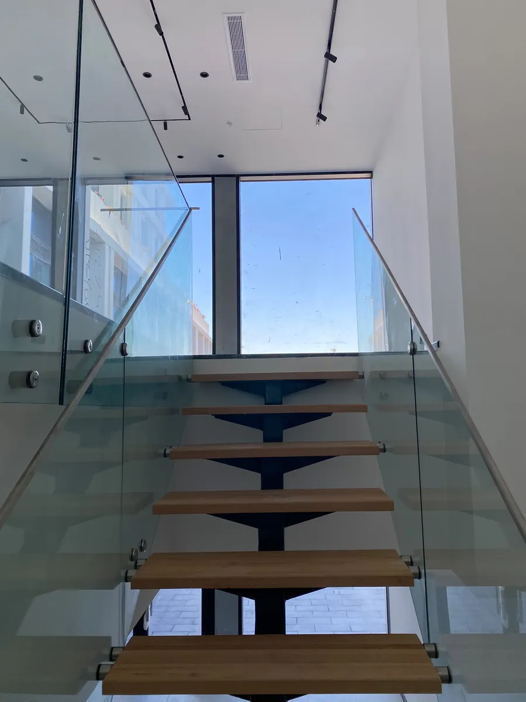
MK-01
Düz omurgalı
Tek omurga · iki yanı cam korkuluk
- Ölçü
- Yakında
- Fiyat
- Teklifle
-
MK-02
L merdiven
Ahşap basamak · metal dikme · ahşap küpeşte
- Ölçü
- Yakında
- Fiyat
- Teklifle
-
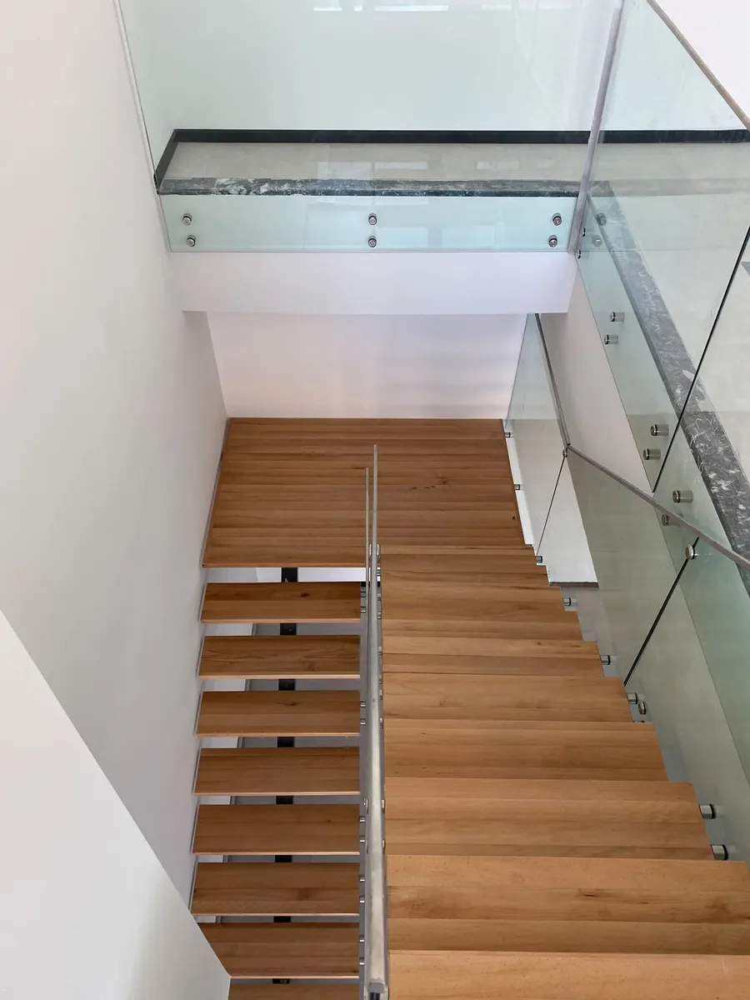
MK-03
U merdiven
Kayın basamak · cam korkuluk
- Ölçü
- Yakında
- Fiyat
- Teklifle
-
MK-04
Dış cephe merdiveni / Yangın merdiveni
Çelik kule · baklava sac basamak
- Ölçü
- Yakında
- Fiyat
- Teklifle
Korkuluklar
Cam ve
metal.
Korkuluk merdivenin karakterini belirler. Her modelle birleşir; merdiven, galeri boşluğu ve asma kat kenarında kullanılır.
- 01
Cam korkuluk
6+6 veya 8+8 mm lamine cam, paslanmaz noktasal cam tutucularla çelik taşıyıcı basamağa ya da ahşap basamağın alnına monte edilir. Mekânı kapatmaz, ışığı kesmez.
- 6+6 / 8+8 lamine
- Noktasal bağlantı
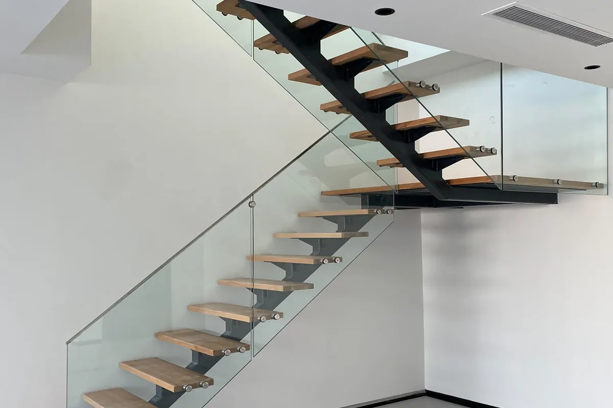
- 02
Metal korkuluk
Mil, lama, kare profil ve farklı metal formları kullanarak mimari projelere özel metal korkuluk sistemleri tasarlıyor ve üretiyoruz.
- Mil, lama, kare profil
- Projeye özel
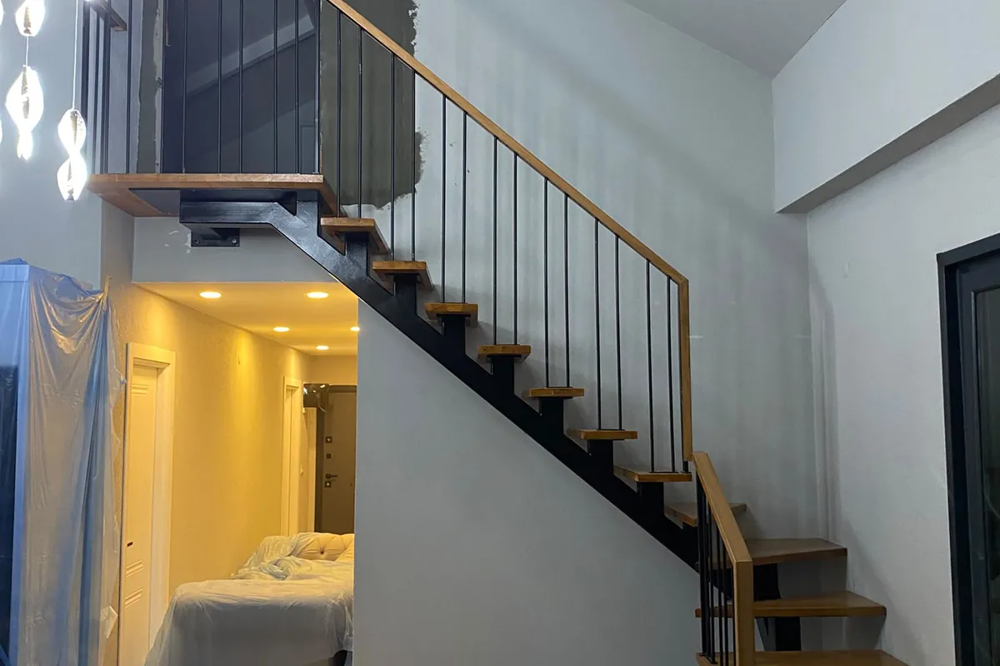
- 03
Separatör metal korkuluk
Yerden tavana uzanan dikey çelik çubuklar merdiveni mekândan ayırır ama görüşü kesmez. Hem korkuluk hem de ayırıcı duvar görevi görür.
- Yerden tavana
- Ayırıcı
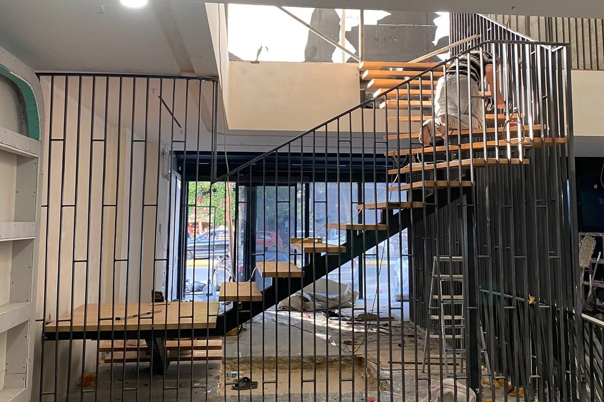
- 04
Yatay lama korkuluk
Seyrek dikmelerin arasına yatay çelik lamalar yerleştirilir. Modern ve hafif bir görünüm sağlar; dış merdivende ve terasta da kullanılır.
- Yatay lama
- İç ve dış mekân
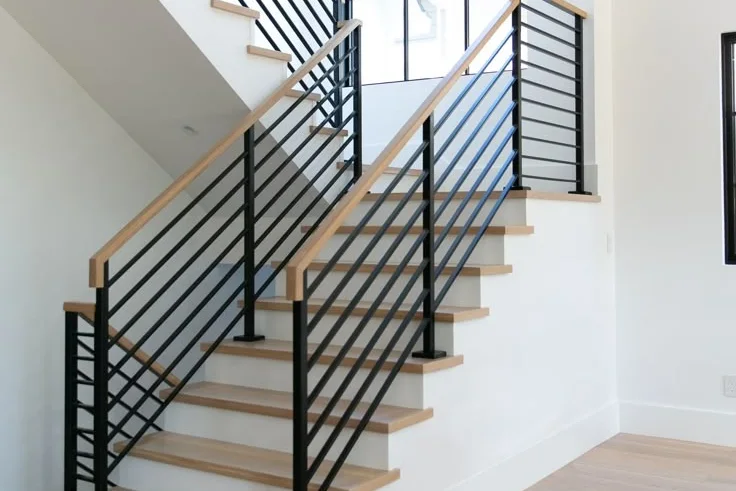
- 05
Asimetrik korkuluk
Kutu profilden, projeye özel çizilen asimetrik bir paneldir. Düz bir dikme dizisi yerine farklı boylarda dikdörtgenlerden oluşur; korkuluk merdivenin yanında bir çizim gibi durur.
- Kutu profil
- Projeye özel desen
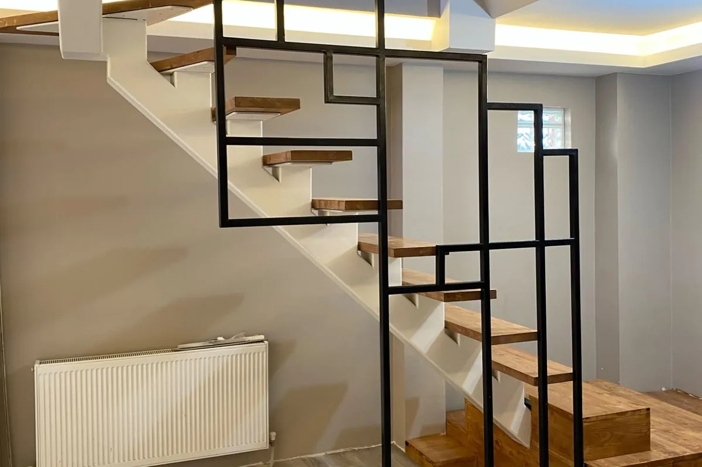
- 06
Galeri korkuluğu
Kat boşluğunu ve galeriyi çevreleyen metal dikme korkuluktur. Ahşap ya da metal küpeşteyle merdiven korkuluğunun çizgisini üst katta kesintisiz sürdürür.
- Kat boşluğu
- Ahşap küpeşte
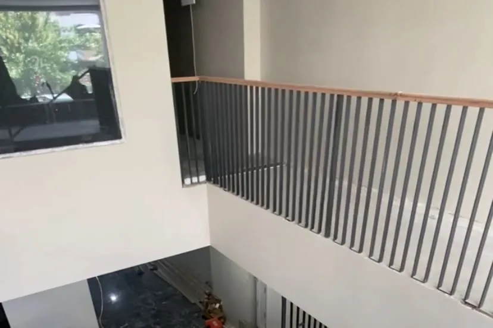